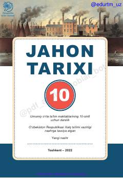

JT10-sinf o‘quvchilari uchun jahon tarixi fanidan rasmiy darslik.
Ushbu darslik umumiy o‘rta ta’lim maktablarining 10-sinf o‘quvchilari uchun mo‘ljallangan bo‘lib, XIX asr oxiri va XX asr boshlaridagi jahon tarixi hamda industrial sivilizatsiyaning shakllanish jarayonlarini qamrab oladi. Kitobda tarixiy voqealar tahlili, sivilizatsiyalar rivojlanishi va zamonaviy dunyoqarashni shakllantirishga qaratilgan ma’lumotlar keltirilgan.